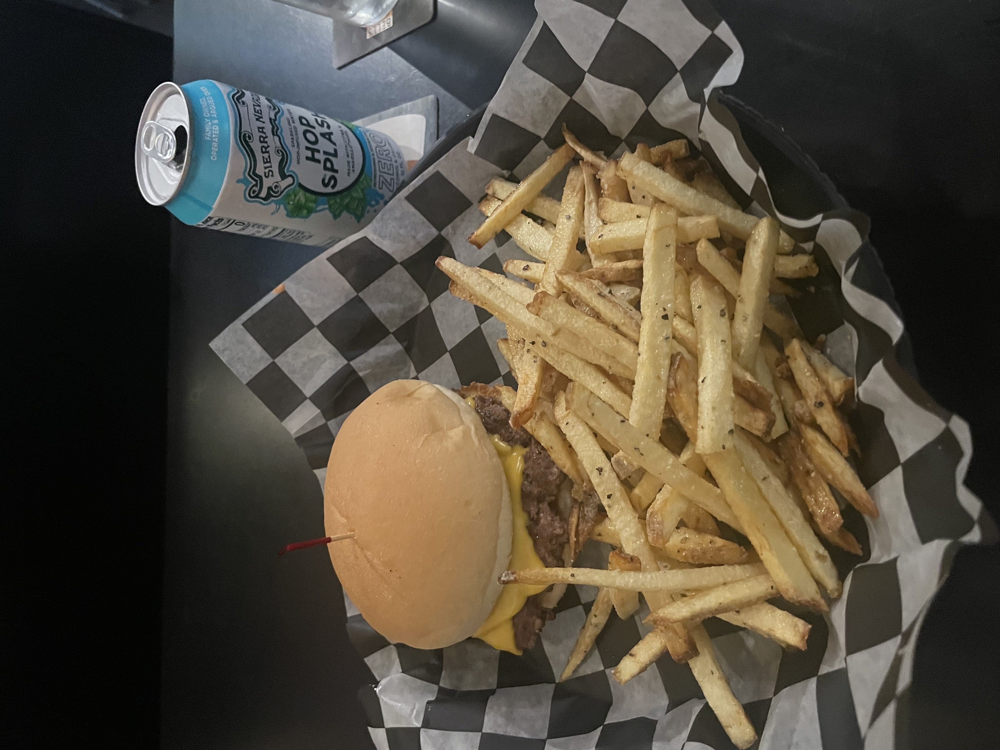

Entries are not A.I. generated. This is straight from the heart.
JL Beers

For the record, I do not drink. I'm not sure why the restaurant is called JL Beers, but I went there
for dinner, and I wanted to post about it. That is a non-alcoholic beverage in the image. It's been
a while since I've written a food review, so hopefully this goes well.
I was on a walk downtown and I wanted to treat myself to
something nice. I heard that this place had good burgers so I decided to try it out. It's a small,
relatively cozy bar, mom and pop vibes.
I thought this place was pretty solid! First off, the
burger was actually super good, and distinct
from other places. I believe they use a potato bun, which makes the bread very soft and satisfying
to chew. It certainly adds to the "burger eating" experience. And the beef tasted quite good;
they
season it very well and smash it so there's a nice crust to it. The American cheese is also great, I
feel like simpler is usually better when it comes to burgers. The burger as a whole experience, was
really great. It felt like I was eating the burger from The Menu. If you know you know.
The fries were pretty decent, I believe I got the garlic parmesean fries. What I liked about them
was the fact that they were super fresh and seasoned pretty well. It felt like I was actually eating
potato, rather than just frozen greasy slop. Well, it was greasy, but at least I felt like I was
eating real food ya know? Sometimes you eat fries and you just feel like shit after, because it's so
processed and/or oily. These were fresh and good overall. My only issue with them is the texture.
You know when you try to make fries at home from potatoes, and the overall "mouth feel" seems
off?
Like it's a more "fluffy potato" texture rather than a "snappy" texture you'd get
from a restaurant.
Yeah, it's like that. It's not necessarily that bad of an issue, and maybe that's just a side effect
of fresh potatoes, but it's noticeable.
Lastly, I had this hoppy sparkling water thing. I actually thought it was quite good. It has that
funkiness you'd get from beer without the poison. I enjoy sparkling water a lot, and this one was
really good. It has like a nice cypress/herbal or woody flavor if that makes sense. I'm not really
an expert on these kinds of things. My only issue is the fact that it's priced like it's beer. Like
cmon brother, I'm not actually drinking a beer so why am I paying alcohol prices?
Anyways, I'd definitely come again! It wasn't too expensive, but wasn't too cheap either. I think I
just expect to pay $15-20 before tip for a nice meal at a restaurant nowadays. It's not the best
situation, but it is what it is, I suppose. I'll give this experience a 6 out of 7.
A few weeks ago, my friends and I watched Inception. All of us did not see it until that point. I'm
a big fan of Christopher Nolan, so I was quite interested in seeing another one of his films. After
all, Interstellar is one of my favorite movies of all time. This
one did not disappoint at all either.
This film has very few faults. I thought the acting was always on point, the cinematography was
beautiful, the action wasn't too cliché, the soundtrack was one of the best I've heard, and the
overarching emotional narrative was touching. Leonardo DiCaprio, although a bit of a weird fella,
is a helluva actor. He holds some real gravity whenever he's on screen. I
feel as though he's excellent at both subtle and grand emotions. The way his character dances around
talking about the death of his wife was both intriguing and tragic. Speaking of which, Marion
Cotillard is exceptional. The way she can flip between an antagonist (as a part of the subconscious
in
a dream) and a tragic victim of this inception induced psychosis is nothing short of
incredible. Cillian Murphy was also amazing. Despite not having as many lines as the others up until
the third
act, he really does steal the show.
Nolan loves his complex narratives and near-to-distant future scientific ideas. I'd say it's fairly
difficult to pull off these semi-sci-fi movies, because of how much work it takes to make the plot
"feel" believeable. A viewer can only suspend their belief so much. He makes the side effects
of
the dreams so intense that it really pulls you in. It's tetering on the edge of something out of
Black Mirror (even though this came first). The best parts of his films is when
there is an emotional tie-in that is connected to all the crazy mind-binding, world-altering,
crazy-insane ideas. You see this in
Interstellar. You (sadly) don't see this in Tenet (even though I love that movie). It's the fact
that you can truly relate to the love and passion that's being shown on screen. The characters
convey loss, sadness, and love and you feel that with them. It's what sets him apart from typical
hollywood
action filmography. It's a heist movie
that captivates you both mentally and emotionally. Not just through sheer audible or visual sensory.
There's more I feel like I should say, but honestly you just have to watch the film. The score is
great, the acting is near perfect, the shots are exceptional... what's not to love. I suppose my
only gripe is the fact that the only reason the plot happens is because some energy tycoon wants to
continue his dominance in the industry. Like, are we really risking our lives just to satisfy
Japanese Exxon Mobil? Ah whatever, at least we get to see a beautiful happy
ending with Cobb and his children. You win this time Nolan. 6.5 out of 7.
After a long day, my girlfriend and I decided to watch a movie together. We both recently saw The
Odyssey, and enjoyed it quite a bit. I personally really like Robert Pattinson as an actor,
so I thought this would be a great film to watch. I've also liked Zendaya in things like Dune
or Spiderman. Funny enough, they're both in The Odyssey, and they did great jobs in
their respective roles.
During the first few 20 minutes of The Drama, I was a bit skeptical. It was giving You
(2018) vibes plus a litle bit of something else that I can't really put my finger on. But, after the
dinner scene, I thought it really started to pick up in the "thrilling" department. After
that, it's
kind of a rollercoaster. The movie overall makes you reflect on a multitude of things. Childhood
trauma, gun violence, redeemability, romantic partners, and everything in between.
I thought the second act was the best part of the film. The way Robert and Zendaya deliberate,
argue, and reflect truly seems realistic and acts as a showcase of true human emotion. After the
incident with Robert's character at the office, the third act was kind of meh. It seemed out
of character in my opinion. The way he went back and forth with his emotions earlier made it seem
like he truly loved his to-be-wife despite the horrifying news. After that, although the final
wedding scene keeps you on your seat, it reads like your typical "uh oh something bad is gonna
happen at this wedding!" kind-of scene.
In summary, there is some dark imagery in this movie, quite a lot of vomitting actually, and some
decisions by characters that make you question society. But it does raise some interesting points in
general, so I'm glad that this was produced so it can be ruminated among the masses. And the acting
was really good in my opinion. There is also a lot of good comedy hits, and it's kind of weird
laughing throughout such a disturbing film. Robert has some good comedic timing. Last thing is that
I think this film actually makes you micro-dose on the Breaking Bad treatment. What I mean is that
it makes you sympathize with someone that, out of context, would seem very strange to sympathize
with. But with just the right amount of exposition and exposure to the reactions of other
characters, you do indeed start to feel pity for this character. Good film! Would definitely
recommend. 6 out of 7.
Over the long weekend, my girlfriend and I decided to watch a
film
we both haven't seen before: The Grand Budapest Hotel by Wes Anderson. A film that, after watching
it for the first time, might be one of my favorite movies to date. This review intends to be as
spolier-free as possible.
This is the first Wes Anderson film I've ever watched, and I'm glad it was. It's incredibly
accessible, hilarious, and touching at times. Ralph Fiennes and Tony Revolori are exceptional actors
and they have great chemistry on-screen. Last year I watched The Menu with Fiennes, and that
was also an incredible watch, in large part due to his performance. He has this sort of gravity to
him that keeps you glued to the screen. His charisma is pretty amazing as M. Gustave; I think Wes
Anderson did a great job at making him a relatable yet enigmatic character. Many of the other
characters were also superb additions to the story. Dimitri, Joplin, and Henckels added a pefect
amount of intensity for this kind of murder mystery adventure film.
I thought the plot, overall theme, and message of the film were very well executed. Despite being
quite lighthearted at times, the message of keeping one's humanity in the face of facist (or simply
violent) barbarism is able to reach the viewer quite easily. I thought the dynamic between the older
Gustave and the younger Zero, being from two different worlds yet experiencing the same violence,
but at two different points of their life... absolute cinema. The fact that the settings were mostly
in fictional places was a great choice, I believe. It allows the viewer to place themselves in these
positions and allows them to fill in the gaps with their own experiences or ideas. At the same time,
I thought that making the facist army resemble real-life events was a great choice as well. There is
this certain emotional atmosphere that enters into films with this particular regime. Wes Anderson
allows that emotional gravity to enter without completely making the film about real history; his
choice to do
that was excellent in my opinion. He is able to capture the viewer and bring them into this
whimsical yet violent world that is very much adjacent to ours, and he makes us reflect on how we
got here. He makes us reflect on what's going on in our world, a world that never ceases with its
violence and barbarism. These characters, these untimely and gruesome deaths, these events, they are
all slightly unrealistic at times. And yet, they provoke us to
think
about how we cope with loss, fear, or troubling environments. Whether it's reaching for our cologne
that reminds of better times, or continuing habits that allow us to grasp at a time when the
violence
didn't engulf us completely, I think Wes Anderson understands how a large majority of people feel
when it comes to facing world events and injustice happening across the globe.
To pivot, I
thought
that the
cinematography was truly stunning. The wide shots and incredible splashes of color were beautiful.
This definitely makes me want to see more films by Wes Anderson. I really enjoy how unorthodox the
scenes looked; there is a unique tinge of character to every part of the film. Perhaps my only gripe
would be
the
visual effects
during the sledding or
snow scenes. They took me out of the movie just a little bit, as it wasn't particularly realistic.
In terms of the overall story-within-a-story narrative, I thought it was executed quite
thoughtfully. The older Zero speaking to the young writer was a well-crafted and charming
interaction. I thought it was the perfect touch to the main story, and sort of wraps it into this
nice bow at the end. I
recommend this film very much so, I
would rate it a
6.75 out of 7!
My friends and I decided to go out and try out some west asian
food
while
I was in
town for winter
break. I always drive by this spot on North Broadway, downtown Rochester. Parking is pretty simple,
there is street parking and even a parking ramp nearby (which is free in the evening). We got some
menus from the counter, sat down, and looked at our options.
There were few options, which is a good sign. Whatever they do, they must do very well. I decided to
try their falafel sandwich combo, which was about ten dollars. It included a falafel wrap, french
fries, and a drink. I was able to select a
drink from their fridge, which was right next to the cash register. They had regular pop and some
international drinks. I decided to try out this Turkish currant soft drink, it was pretty good! In
terms of the falafel sandwich, it was also delicious. The fries were decent; they came out plain,
but you can salt them yourself obviously. I tried my friend's chicken shawarma, and wow, it was
amazing. The spices made it incredibly flavorful, and it was so juicy, you wouldn't believe it.
If you get anything from this place,
get the chicken shawarma. Whatever sauce they had in both wraps were good as well. It's a casual
place run by a few chill guys. I want to come back, I noticed on their menu that they had
traditional family style "feasts", which seemed super flavorful just looking at the pictures.
I'm
not sure who the owners are, but from the pictures and iconography, they are of Iraqi or Palestinian
origin. I recommend this place, I would rate it a 6.5 out of 7!